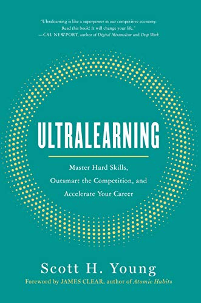

How to Plan a Learning Sabbatical
[Introduce yourself? Or add disclaimer?]
Scott Young's Ultralearning, details strategies for self-directed learning. It's a must read for anyone embarking on a learning sabbatical. This is his framework:

- Metalearning: First draw a map. Start by learning how to learn the subject or skill you want to tackle. Discover how to do good research and how to draw on your past competencies to learn new skills more easily.
- Focus: Cultivate the ability to concentrate. Carve out chunks of time when you can focus on learning, and make it easy to just do it.
- Directness: Learn by doing the thing you want to become good at. Don’t trade it off for other tasks, just because those are more convenient or comfortable.
- Drill: Attack your weakest point. Break down complex skills into small parts; then master those parts and build them back together again.
- Test to Learn: Testing isn’t simply a way of assessing knowledge but a way of creating it. Test yourself before you feel confident, and push yourself to actively recall information rather than passively review it.
- Feedback: Feedback is harsh and uncomfortable. Know how to use it without letting your ego get in the way.
- Retention: Don’t fill a leaky bucket. Understand what you forget and why.
- Intuition: Develop your intuition through play and exploration of concepts and skills.
- Experimentation: Explore outside your comfort zone.
This advice sounds pretty generic. Don't let that dissuade you. I was initially turned off from the book because it felt too "growth hackery" but actually got a lot out of it.
Other Advice
As I spent more time reading about the cognitive science of learning, I came across a number of other concepts that helped me better understand the challenges of our existing education system, along with the difficulties of self-led learning. It's important to understand:
- Learning styles (auditory, visual, tactile, etc) are a total myth. Read Stanislas Dehaene's excellent How We Learn for a high-level overview of the cognitive science of learning. Learn how to Learn on Coursera is also OK.
- Bloom's 2 sigma problem and the benefits of 1on1 tutoring combined with mastery learning.
- The challenge of selection bias in education
- The signaling theory of education.
- The transfer problem in education and the importance of learning by working directly on real projects.
General Tips / Advice
- Document your journey. Depending on your field, self-led learning's lack of credentials can either be a benefit or a curse. For someone in software, a learning sabbatical gives you the time to build a portfolio of work, proving your competency. For most other fields, employers equate "self-taught" with "weird" at best. Because of this, it's important to document your journey and produce work-product that's easily digestible. This enables others to give you feedback. It also serves as a stand-in credential for future employers. DataScienceJourney is one of the better examples of this that I've seen.
- Treat memory as a conscious act. Use spaced repetition systems like Anki. When reading books, take notes or use Kindle's highlight functionality to capture important passages. Highlights get automatically uploaded here. Review the highlights when you're finished with the book. Then synthesize the important concepts in your own words. Then create flashcards in a spaced repetition system like Anki.
- Search for predicates. When you begin to research a new subject, search for someone who has gone on a similar learning journey before you and written about it. Gather and compare curriculums. Search for roadmaps/guides. Then, build your own curriculum and iterate as you go. As you progress through a topic, consider creating a learning map to help organize the concepts you encounter.
- Only read 3-star reviews. When looking for books / courses, 3-star reviews tend to be less biased and have a much higher signal to noise ratio.
- Drop bad educational material. If the book, course, or project you selected isn't engaging you, find a better one. A better alternative almost certainly exists.
- Track your routines / habits. I built this spreadsheet for tracking mine. Atomic Habits by James Clear is a great resource for behavior change.
- Find an accountability buddy. Schedule a weekly call to 1) Review the prior week's goals 2) Review your daily habits and 3) Set new goals for the coming week. Choose one task to wager $$ on if you fail to complete it. Accountability buddies work best If they're also doing a learning sabbatical. If you don't have an accountability buddy, reach out to us and we'll try to pair you with someone. Or, you can try using Stickk.
- Find community and change your identity. To learn a new skill, join a culture where your desired behavior is the normal behavior. Deliberate practice is achievable when you see others doing it every day. For software developers, the Recurse Center is a great community that facilitates self-led learning.